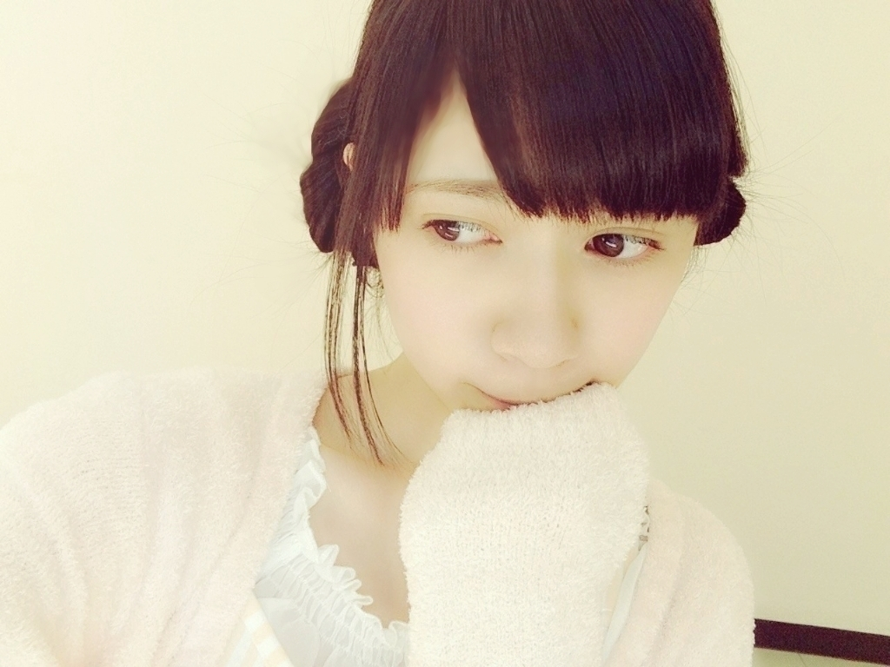
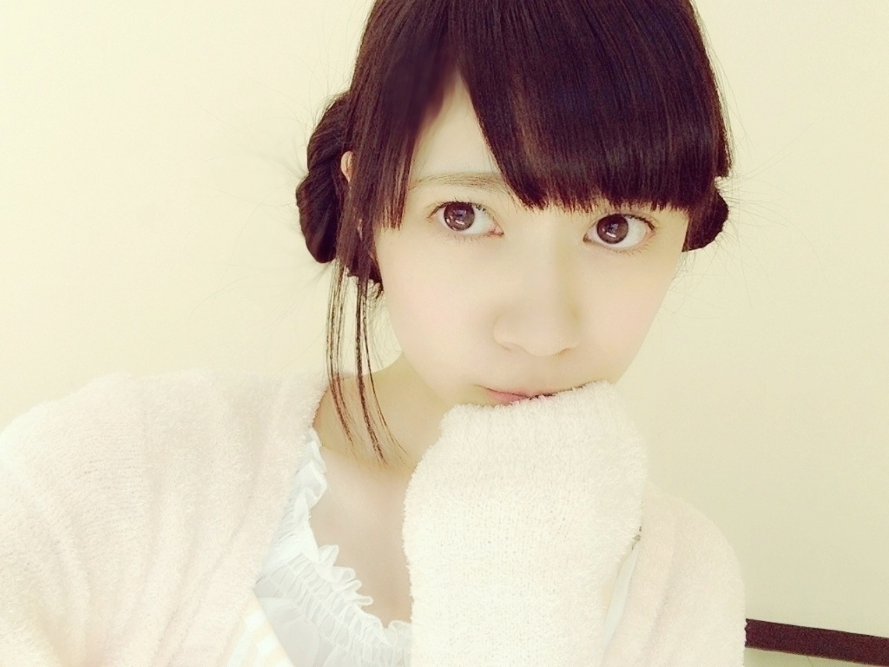
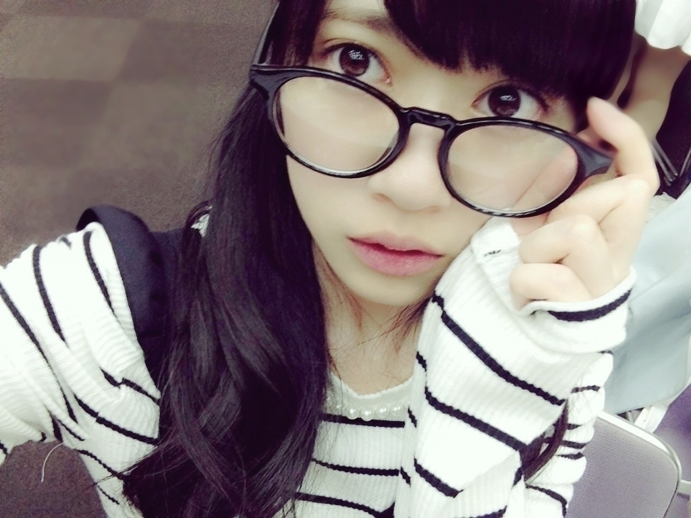

2015/0605Friショート。題名忘れました！ ！
おはようございます
こんにちは
こんばんは
乃木坂46 2期生の寺田蘭世です


NOGIROOMにてパジャマ
ボーダー組で出させて頂きました
ボーダー柄のパジャマ率が高かったような笑
ちなみに私はストライプ柄
皆さん
見てくださいましたか？
お菓子も美味しかったし
なにより、白石さんからのお手紙
すごく嬉しかったです♬♬
○○○
皆さんからのコメントを
そのままの、文章で
コメント返ししてます！
○握手会で
プク顔してって言ったらして
くれますかね？ｗｗ
→もちろんです
お待ちしてます♬
○蘭世は
ドラゴンボールも
見るんですか？？
→たまーにですが
語れるほどではありませんが
ブログの題名にも
映画ドラゴンボールZ 神と神に
出てきたキャラクター
予言魚って書きましたー！
予言魚の声優さん
しょこたんさんの声も可愛くて
ドラゴンボールファンの方
色々この回が特におすすめだよとか
教えて頂きたい( ..)``
○そう言えば、
蘭世は誕生日にもらって
嬉しいものは何？
→9月23日秋分の日祝日と
言うことで
当日におめでとっと言われる事が
少なくって
祝日は家族とくらいにしか
会わないので( ..)``
平日なら
学校とかでおめでとうって
言ってもらえていいなーって
小学生の頃は思ってました。
今は、沢山の方に
おめでとうっと
言っていただけるので
本当に嬉しいです
こうやってコメントとかでも
おめでとう言ってもらえるの
嬉しいですし
握手会で直接言って下さるのは
もっと嬉しいです♬
質問のもらって嬉しいものは
もちろん形に残るものは
目に見えるものを頂くのは
嬉しいです
私の為に準備してくれたんだーって
その人なりの
祝い方でお祝いしてくだされば
それだけで幸せです♬
○はじめてコメントします♡
うたプリが大好きなので、
うれしいです...！笑
私は藍くんとレンくんが好き♡
いつか握手会で
お話したいなあ〜 *´∀`*
→はじめまして
寺田蘭世です♬
宜しくお願い致しますですですです
藍ちゃんファン発見
ぜひ、仲良くして欲しいです
レン様ー
レン様ーーーー
お話しましょうね
っと言いますか
お話して下さい( ..)``
○NOGIBINGO、最初、
蘭世かなって思ってたら
蘭世だったからうれしかった。
みり愛と、きーちゃん
1期生に
応援して貰ってけど
蘭世だったら
誰に応援して貰いたい？
最近、ますます蘭世の
勢いが止らなくなっているきがする。
→事前に
もし応援されるなら
誰がいいですかーって
聞かれたときは
生駒さんに
耳元で囁いて頂きたいっと
お願いしてました！笑
コメント
ありがとうございます
これからもよろしくです♬
○最近、自分の
地元鳥取県にスターバックスが
できました!!
1000人も並んだらしくて、
売り上げも
過去最高だって!!
→やったーー♬
スタバさんあまり
行かないんですよね
本当は行きたいんですけど
頼み方とかいろいろ
種類があるじゃないですか？！
もう、店員さんに
オーダーするのが
ドキドキしちゃって
皆さんのおすすめ
教えて頂きたい！！！！！
そしたら行こうかな
すごーく昔に
絢音ちゃんと琴子たんと
3人でスタバさんに寄ったなー
懐かしい♬
今度誘ってみようかな
自分から誘うことも出来ないのが
ちょっと悩みです( ..)``
このブログ2人が読んでくれてたら
声かけてください、、、笑
○フィルコリンズの
「Easy Lover」かな。
80年代の洋楽ですけどね。
あの年代の洋楽が好きです。
→私も、８０年代、７０年代の
洋楽が大好きです♬
パパの影響なんですが
幼い頃は洋楽しか
聴かなかったような、、、
○らんぜちゃん初めまして〜！
昨日乃木のの聞いていて、
気になっていたらんぜちゃんを
少しずつ
推していくことにしました！
推してもいいですかね？
ぷく顔選抜おめでとう〜((*ﾟ∀ﾟ))
これからも頑張ってください！
ボーダーリピート
とまらんぜー！！！！！
→とまらんぜーーーーっ！
はじめまして
宜しくお願い致しますですですです
(´｡･o･｡｀)♬
○初コメです。!!
24日の乃木のの聞きました!!
とても可愛い
声で聞いていて
癒されました▷◁♡*｡ﾟ
→はじめまして
宜しくお願い致します♬
声かわいいだなんて
自分は自分の声
好きじゃないんです
むしろコンプレックスだったんですが
こうやって
嬉しい事を言って下さるの方がいると少し自身が持てます
ありがとうございます( ..)``
○地震が
あったけど大丈夫ですか？
→大丈夫でしたよ
皆さんのお住まいの地域は
大丈夫でしたか？
最近多いですよね
モバメでも送りましたが
今一度
災害が起きたときに
どうするかって
家族と話し合いも大切だと
思いますし
避難用バッグの
中身の確認して頂きたいです！！
災害が起きてからの
食料の買い溜め
1人でも多くの方が
前もって備えておけば少しは
変わるのかなっと思います。
このブログを読んで下さっている方
1人でも備えてくだされば
有りがたいです！！！
テラダもお部屋には
・ヘルメット
避難用バッグ中身には
・ウエットティッシュ
・絆創膏等 必要な方はお薬とか
・食料は日持ちするもの
・お水
・上着や靴下
・石鹸
・ビニール袋
・笛
ロープとかポリタンク
軍手も持っとくと良いらしいです！
お水が入らなかったので
他の部屋に保管という形ですが
大きめのバッグがあると
なおさらGoodですね( ..)``
○大学の勉強でやる気が
出ないんだけど
勉強に対してどうやって
やる気だしてる？
あと課題が多すぎて
精神的に疲れてるから何か
応援クダサイ！ヽ(´ｰ｀ )ﾉ！
→頑張れーーー
ヤダヤダって拒んでも
やらなきゃ進まないし
いつやっても結局
やる事にはかわりはない。
って思うと
できると思います、、、
私は、勉強はちょっとなので
でも頑張りましょう
生きましょう
応援してます。
○質問です
鳥は好きですか？(*^.^*)
→鳥さん好きですよ
過去のブログにも鳥の話は
色々書いてきましたが、、、
フクロウカフェに行きたいって
ずっと言ってるのに
行けてないという、、、
カラスがかわいいと思う
中学生の頃は本気で
カラス飼いたいって思ってました。
シマエナガ熱は
まだ冷めてはいませんよ！！
○蘭世さんのブログやメールには，
知らない
世界がいっぱいあって，
めっちゃ楽しい～～!!
蘭世さんが世界を
広げてくれるからとても
うれしいよっ!!
→ありがとうございます
逆に皆さんの
趣味とかオススメなものを
教えてほしい♬
私もいつも皆さんのコメントを見て
色々なこと教えてもらいますし
色々な考え方を知ります
いつも
ありがとうございます( ..)``
○実は毎回
こっそり読んでたけど、
斬新すぎて思わず
コメント
したくなりました（笑）
→こっそり読んでくださってたと
いう事は今回初コメさんかな？
ありがとうございます
斬新ですか(´｡･o･｡｀)！？？
○やっぱり、
らんぜの勢いとまらんぜー！
→ありがとうございます
これからもとまらんぜーで
頑張りたいと思いますので
応援宜しくお願い致します♬
○私は、
らんぜのコメ返？に
載せてもらうコトが夢。
いつか叶うと嬉しいっす！！
→その夢
ワタクシが叶えてしんぜよう。笑
ドカーン キラキラ
（魔法使い中なので
効果音のつもりです）
叶いましたか？
○ごめん、蘭世
もうエアコンフル活用しとるわ(笑)
5分消したけど耐えれんかった(笑)
→耐えてください
何事にもたえるんだーーーぁ
布団がふっとんだ。とか
つまらないギャグでも言いあって
寒くなりましょう
5分の積み重ね、、、！！！
○エコしようキャンペーン
参加希望！笑
エコしよう！
世界中へピース！！！
→エコしよう！キャンペーン
世界中へピース
いい名前なんかカッコイイです
気に入りましたので
これから使わせて頂きます。笑
エコしよう！キャンペーンとは
私のモバメからはじまった
地球温暖化防止みたいなもので
エアコンとかまだ
真夏を迎える前から使うのを
ちょっと我慢しないと
夏本番まで
もたないのではっという、、、笑
しかも、エコにもなるっと言うことで
少しでも自分にできる
エコなことをしようっという
企画です♬
私1人が小さなエコをしても
無力ですが
このブログを読んでいる人が
1人、また1人、、、
少しでも協力して下されば
変わるかなーっという( ..)``
よかったら皆さんも
エコしよう！キャンペーンに
ご参加ください♬
参加方法は簡単
エコに繋がることを1つでも
して下さればオッケーです♬♬
○ZUKA部があったら入りたい、
にゃんです(о´∀`о)
最近は月組さん観ましたか？
私はムラで雪組のルパンを観てから
ご無沙汰です(T-T)
次回は是非!！
宝塚ネタも
期待してますよ(*´ω｀*)
らんぜちゃんは宝塚の
作品や役で何が好きですか？
理由なども教えてほしいな
→コメントありがとうございます
宝塚トーク
久々ですねねねねね♬
たいへん
長らくおまたせ致しました笑
宝塚最近観に行けてないんですよ
もう、宝塚不足で
萎れそうです、、、笑
私もルパンは観に行きましたよ
月組さん観てないんです
まだムラですからね
東京きたら、、、
でも、予定が合わなそう
ひと目でもいいから
朝美絢様を拝ませてください。笑
宝塚GRAPHや
歌劇も全然買えてない
『この世ーの終わりが近いー♪歌詞』
動画で薔薇の封印をみてから
凄く自分の好きな世界観で
ここ最近何回も何回も
見直してます♬
大空さんが居らっしゃって
とても懐かしい気持ちになりました
大空さんもちょっと気になってた
ときもありました
そして、北翔さんの月組時代
なんの役が好きかは
迷いすぎて、、、( ..)``
また、宝塚トークしますね
そして、ぜひ一緒に宝塚トーク
しましょうね♬
○今話題の
カープの球団歌に合わせて、
「らんぜ応援歌」
作ってみました、、
らんぜちゃんは
カープ女子ですか?
→コメントありがとうございます♬
最近の握手会で
どこのチームを推しますかって
質問をよく頂くのですが
たしかにプロの試合では
侍ジャパンさんを応援してるので
確かに、推しチームがまだ
決まらないんですよね
最近ニュースとかでも
野球がやっていると
今までより
気になるといいますか
見方が変わりました！
カープ女子とか
流行りですもんね！！
１回野球大好きな女の子達に
密着といいますか
１日お供してみたい( ..)``
楽しそうだなー
告知○
2015年 6月 9日 UTB+ さん
生田さん
万理華さん
高山さん
寺田
中元さん
西野さん
UTB＋さんでは
初めての１人で撮影でした
雑誌に出る機会も
まだまだ少なくて
経験がないもので、、、
でも、カメラマンさんが
優しく教えて下さいました！
撮影した日は本当に楽しくって
実は、カメラマンさんも
凄く楽しかったと言って下さって
私自身はこう言った現場を
体験した事自体が
初めてだったので
いいのか悪かったのかも
わからなかったのですが
ページに貼りきれないのに
沢山撮っちゃったーって
言っていただけたのが
たいへん嬉しかったです♬♬
すごーく
楽しかったですし
嬉しかったです
2015年 6月10日 MARQUEE さん
川後さん
寺田
樋口さん
渡辺
みりあちゃんと出てます♬
取材も深いところまで
話した印象です
お衣装も可愛かったので
ぜひ、チェック
宜しくお願い致します
今年の１つの目標であった
『雑誌に沢山出たい』っと
ブログ等で公言してます。
今年も前半戦が終わりそうです
時が経つのははやいですね、、、笑
でもでも
もーーっと
とまらんぜーで、、、( ..)``
これからも、宜しくお願い致します♬

2015/06/05 19:42


コメント(628)
こんにちは
こんばんは
ブログ更新待ってたよー！！！
今週末の握手会、また蘭世レーンにお邪魔するのでよろしくお願いします(￢∀￢)
何話そうかなー⁇
何話して欲しいですか…？(笑)
とにかく蘭世に会えるのが楽しみです(^^)
では、きっとまた( ..)``
相変わらず可愛いねｗ
今日はうちの猫が誕生日ですw
明日総選挙見に行くよ！
やっほー！あ、姫！！
7日も行くからねー！
今から楽しみだおー
けんちゃん☆おーじ
らんらんかわいいー(///ω///)♪
自撮りの写真可愛い〜
これからも頑張ってね^o^
全国ツアーいくぜー！！
握手会行きたかったけど券取れなかった( ；∀；)
いつ行けるかわからないけど絶対いくからね～(｢･ω･)｢
それじゃまた！
こんばんわ！
ブログアップありがとう( ￣▽￣)
またコメントするねー
もう、かわいくてかわいくて
たまらんぜっ！
はやくらんぜに会いたいよぉ
らんぜー♪
パジャマ可愛かったよぉ(*^^*)笑
エコ心がけますね！！
また握手会行きます～♪
らんぜが最近ハマってるものってある？
ちなみに俺は玉ねぎスライスですな♪
ぽん酢で食べるのが美味いんだ！
もうすぐテストだよー:;(∩´﹏`∩);:
テスト勉してる時に、曲聞いてるんだけど、オススメの曲あるー？？
蘭世さんの影響で宝塚に興味が湧いてきました笑
頑張ってください！
いつも読んでますw
ブログが元気の源ですw
これからも頑張ってね！！
あと、1つ質問！
高校の数学ってどーやったら点数のびるの?(；д；)
ぜんぜん伸びなくて悲しい(´；ω；｀)
蘭世なりの勉強方法があったら教えてください！
今回は長かったね٩(๑❛ᴗ❛๑)۶
いつも質問返しとか大変だね〜
いつか俺も返してもらいたいな(；´Д`A
誕生日前日の握手会はチケット取ってあるけど生誕祭は仕事で間に合わないな(>_<)
ごめんね(>_<)
次蘭世に会えるのは全ツかな？
早く会いたいぜ〜
蘭世の勢い止まらんぜ٩(๑❛ᴗ❛๑)۶
蘭世は好きなアイドルとかいるー？
あと私の地域NOGIBINGO!見れないからさ笑笑
YouTubeでみてるんだけどのぎるーむ蘭世でてるならみるかなー！
なんて思ってました笑笑
そういえば今は音楽会の練習してるよ〜♬
がんばってる٩(ˊᗜˋ*)و
俺も明日から学校でキャップ集めしよっと！
( ﾟдﾟ)ノ ハイ！質問！
雨の日にできる楽しいことを教えてください！！
これから梅雨でアウトドア派の俺にはキツいです笑笑(*^^*)
|陰|ω-)q陰から応援してるゼ
最近あめーさんさんとーだね！
コケるなよ！笑笑
ばいせこー(a_k)
12枚目の個別で蘭世行くからね～✧٩(ˊωˋ*)و✧
NOGIROOMのパジャマいいね！
縦のボーダー(*´∀｀)笑
ボーダー着てるメンバーが3人くらいいて意識高いなーって思った(*´ω｀*)
今回は短め！
蘭世の勢い……とまらんぜええええ！
ではでは(｀･ω･´)ﾉ
でも、モバメ取り始めてかららんぜがすごく身近に感じるよ〜
コメント返してもらってる…！！ありがとうございます！幸せ者です…！らんぜちゃん大好き
ボーダーなのに上をいってストライプなのかわいい
らんぜちゃん今年夏注目してるアイテムはなんですかっ！？教えてくださると嬉しいです
nogiroomみたよ！ボーダー組よかったね！
2期生をもっとだしてほしいなぁ＞＜
乃木中でも2期生紹介コーナーあるけど時間が短いよねー
もって2期生をみたい!!(切実)
じゃ、また次のブログで(´∀｀*)ﾉｼ
ブログの更新早いねw
さすが！とまらんぜ！！！
蘭世の握手会の部数が全会場5部にさせるのが夢です！
その時は行きます！必ず行きます！どこでも行きます！
うたプリあんまり知らないけど蘭世の中で1番面白い！と思う話ってありますか？
今度見てみようと思います！
握手会でまたいろいろ喋ろうね！
らんぜの勢い！！！！
ん〜〜〜〜〜！とまらんぜ！！
こんにちは
こんばんは
ノギルームちゃんとみたよ！
縦のボーダのパジャマかあいいかったよ
雑誌もちゃんと買うねもちろん！
明後日の握手会楽しみ
はやく蘭ちゃんに会いたいよ
らんぜお疲れ様！
超かわいい！(*´∀｀*)
こんにちは！
こんばんは！
nogiroom見たよ！可愛い(^ ^)
ドラゴンボールはセル編の孫悟飯がスーパーサイヤ人2になるときはヤバいよ( ^ω^ )
野球も大好きなんやけど阪神タイガース応援してるよ！
地元やしね(￣▽￣)
甲子園はメッチャいい球場やから一度は来て欲しい！
京都の握手会行くつもりやからプク顏期待してるよ(o^^o)
色々な事がどんどん分かっていき読むのが楽しいです!!!
握手会売り切れがたくさん出てますね！
嬉しい悲鳴です笑
最近暑い日が続き
ますね。体調の方
は大丈夫ですか。
熱中症には気をつ
けて下さいね。
いつも応援してます。
長文ブログありがとう
スクロールに時間がかかった（笑）
すごくボリュームがあって読み応えあったよ
ーーーーーーーーーーーーーーー
質問ね。
「蘭世」の名前の由来は？
らんぜのプク顔かわいくていつも楽しみにしてます。
いっぱいアップしてください！笑
6月9日が自分の誕生日なんですが、祝ってくれたら嬉しいです( ´ ▽ ` )ﾉ
らんぜの勢い、、、とまらんぜっっっ！
大丈夫、勇気を出してスタバに行きましょう
あ～、蘭世ちゃん可愛い～
コメントする